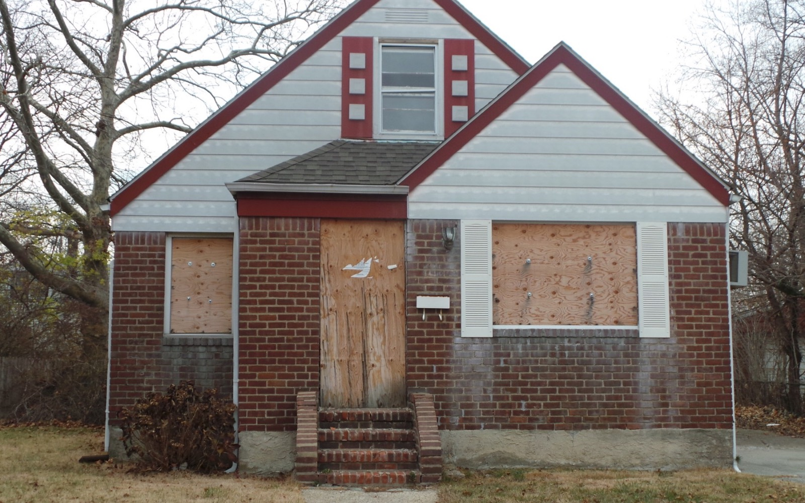
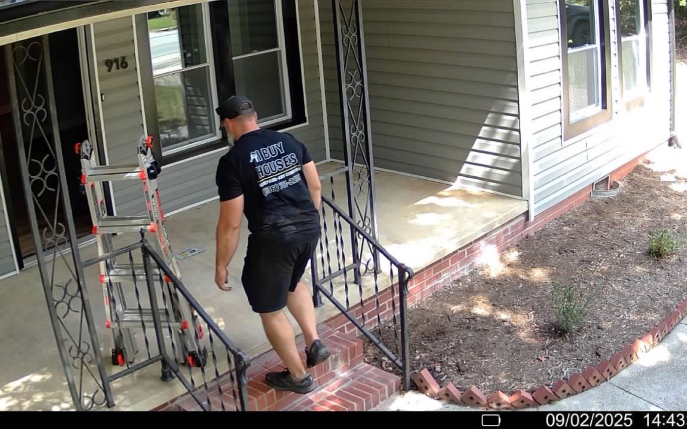

Winston-Salem NC
Sell your Winston-Salem house fast without fixing it first.
If the house needs repairs, has been inherited, has tenants, or you simply want a cleaner sale, America Home Buyers LLC can help you compare an as-is cash offer with a traditional listing.
When a fast sale may make sense.
Winston-Salem sellers often reach out when the property would need work before showings, when a family property needs to be settled, or when they want to avoid months of cleanup and repairs. A direct offer can reduce moving parts, but it should still be compared against what the open market may bring.
- Older homes with deferred maintenance.
- Inherited properties or estate situations.
- Vacant houses that need cleanout.
- Owners who want privacy before going public.

Do I need to clean out the house first?
No. Share the condition honestly and we can review the property as it sits.
How quickly can closing happen?
The timing depends on title work, property access, payoff information, and your needs. We will discuss a realistic closing window after reviewing the property.
Winston-Salem and Forsyth County
“Fast” should still mean clear.
A rushed decision is not the goal. The useful version of a fast sale is fewer repairs, fewer showings, a known buyer, a written agreement you understand, and a closing timeline that fits the title work and your situation.
Ask what inspections remain, whether the agreement can be assigned, who pays which costs, and what happens if the buyer does not close.

Request a Winston-Salem offer.
Send the phone number and property address. Name and email are optional.
Compare the whole outcome.
Do not compare only a cash offer with an optimistic retail price. Compare repairs, cleanout, concessions, commissions or fees, carrying costs, timing, and the chance of a financed buyer failing to close.